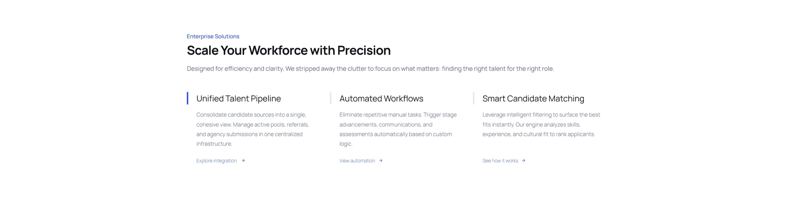
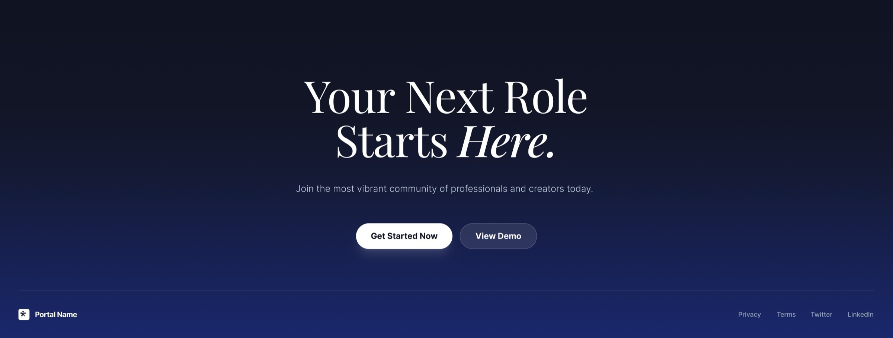

Job Portal
A two-sided hiring platform: a marketing site for recruiters and enterprises, and a careers site for job seekers, built to run for any organization.
- Role
- UI/UX Design
The brief
Most hiring platforms design for one audience and treat the other as an afterthought. This one needed two real landing experiences under a single product: one that sells recruiters and enterprises on a faster hiring pipeline, and one that sells candidates on the roles themselves, with a shared enterprise feature set underneath both. It launched with two institutions already using it, Kristu Jayanti University and Olive International School in Doha, evidence the two-sided pitch works before a single case study gets written.

Sold on infrastructure, not adjectives
The recruiter-facing landing page opens with the product’s actual claim, “the new infrastructure for modern hiring,” backed immediately by a live product shot and a real metric, candidates hired this week, instead of a wall of feature adjectives. Trust logos from institutions already on the platform close the section before a recruiter has to take anything on faith.
A different pitch for the other side
Job seekers get their own landing page, not a cropped version of the recruiter one: dark, editorial, built around “Careers, Reimagined” and a stack of real open roles rather than an enterprise sales pitch. Same product, same brand, a completely different opening line.

Where the pitch turns into a feature list
Further down the candidate-facing page, the audience shifts entirely: a dedicated enterprise section breaks the platform into three concrete capabilities, a unified talent pipeline, automated workflows, and smart candidate matching, each with its own explanation link rather than one generic features grid.

One closing line, either audience
The page closes the way it opened, on the candidate side, with a single direct call to action rather than a form. “Your next role starts here” reads as an invitation whether the visitor arrived to hire or to be hired.
Have a project like this?
I take on select freelance and contract work. Happy to talk about what you’re building.